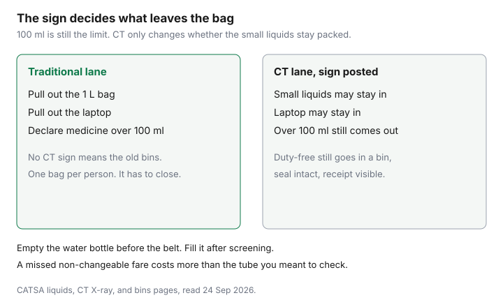

Travel · Canada
CATSA Liquids and Security Tips That Speed Canadian Departures (and Protect Your Fare)
A full-size toothpaste costs a few dollars. Missing a non-changeable flight because security had to open the bag costs the fare. CATSA’s liquids rule is the part of packing that protects the ticket. The figures below were read from CATSA’s public pages on 24 Sep 2026. Screening officers and the sign in front of your lane outrank a memory of how it worked last year.
Disclosure: There is no natural affiliate product in a security lineup. Saving Optimizer does not claim a CATSA or airline partnership. Education only. Passenger compensation for a delay the airline controls is a different guide. A bag you packed badly is not that delay.
Key takeaways
- Carry-on liquids, gels, aerosols, and non-solid food must be in containers of 100 ml / 100 g or less, all inside one clear, resealable 1 L bag per passenger. CATSA’s approximate bag sizes are 15.24 cm by 22.86 cm, or 20 cm by 17.5 cm.
- Prescription and essential non-prescription liquid medicines may exceed 100 ml. They do not have to fit in the 1 L bag. Declare them. Baby food, milk, formula, water, and juice over 100 ml are allowed when you are travelling with an infant under two. Breast milk is allowed over 100 ml even if the child is not with you.
- Duty-free liquids need an official security bag and an itemized receipt. The bag is valid for 48 hours (two calendar days). If you open it, it fails.
- At a CT lane, permitted liquids of 100 ml or less and large electronics may stay in the carry-on. Liquids over 100 ml still come out. If there is no CT sign, pull liquids and large electronics.
- CATSA’s own timing advice: about two hours before a domestic flight and three hours before a US or international flight. A Verified Traveller lane can be faster and can still divert you to a regular line.
- A Basic fare you cannot change makes the buffer worth more than the toiletry. Fare brands are the Basic versus Standard guide.
100 ml / 1 L bag rule and what counts as a liquid, gel, or aerosol
CATSA’s rule, read 24 Sep 2026: containers of liquids, non-solid food, and personal items in your carry-on must be 100 ml or 100 g (3.4 oz) or less. Every container goes in one clear, resealable plastic bag of no more than 1 litre. One bag per passenger, including each person in a family. The bag has to be transparent so an officer can see the contents. CATSA gives two approximate footprints: 15.24 cm by 22.86 cm (6 by 9 inches) or 20 cm by 17.5 cm (8 by 7 inches). A jumbo freezer bag that is “about a litre” and will not close is not the bag.
The test is whether you can pour it, spread it, or spray it. That includes toothpaste, deodorant gel, hairspray, jam, peanut butter, yogurt, pudding, and soft cheese that fails as a solid. A jar that claims to hold less than 100 ml still has to fit in the same bag with everything else. If the containers do not fit, you do not get a second bag. You get a choice: move the extras to checked baggage before you reach the lane, or surrender them.
Powders are a separate limit. CATSA says certain powders and granular materials in carry-on are limited to a total of 350 ml or less, about the size of a soda can, and some may need extra screening or may not be permitted. Baby formula, life-sustaining medication, and sacred items can be exempt. If you do not need the powder on the aircraft, put it in the checked bag. The 1 L liquids bag does not solve a powder problem.
| Item | Carry-on | What to do at the lane |
|---|---|---|
| Toiletries 100 ml or under | Yes, inside the single 1 L bag | Out of the bag on a traditional lane. May stay in the carry-on on a CT lane. |
| Full-size toothpaste, jam, peanut butter | No, if the container is over 100 ml | Checked bag, or buy a small container before the airport. |
| Prescription liquid medicine | Yes, over 100 ml allowed | Declare it. It does not have to live in the 1 L bag. |
| Duty-free liquid | Yes, if the official bag is intact and in date | In a bin, with the receipt visible. Do not open the seal. |
Medications, baby food, and duty-free sealed-bag exceptions
Medications are the exception people under-use and then over-argue. CATSA allows prescription and essential non-prescription liquid, gel, and aerosol medications in the carry-on in amounts larger than 100 ml. They do not have to go in the 1 L bag. You will be asked to present them. Pack them where you can reach them without unpacking the suitcase in the bin. Pharmacy labels on prescription containers make the conversation shorter. Essential non-prescription items on CATSA’s list include pain relief, cough syrup, decongestant spray, gel supplements, saline, and eye care. Cannabis oil for medical purposes, if it is 100 ml or under, goes in the 1 L bag with the other liquids. If a liquid medicine exceeds 100 ml, say so.
Infant food is the other exception. If you are travelling with a child under two (0–24 months), baby food, milk, liquid formula, water, and juice may exceed 100 ml. Gel and ice packs are allowed to keep those items cold, and also for an injury or to protect medicine. Breast milk may exceed 100 ml whether or not the child is with you. Present the items for inspection. CATSA suggests avoiding metal-lined containers for powdered formula in carry-on. Powder screening can still apply, with exemptions for baby formula.
Duty-free is not a free pass for a bottle you bought downtown. CATSA accepts duty-free liquids, aerosols, and gels that are sealed in an official security bag with an itemized receipt, subject to screening. Officers may open the bag to screen it and re-seal it. You can lose the purchase if the bag or the product fails screening, the retailer did not use an official bag, the receipt is missing, you opened the bag, or more than 48 hours have passed (official bags are valid for two calendar days). CATSA describes the bag’s security marks as a checkmark, a circular arrow, and a red border. A connecting airport outside Canada can still take the bag even when Canada accepted it. If you have a connection, do not open the seal to “just check.”
CT scanner lanes vs traditional bins—what to pull out
CATSA is rolling out computed tomography (CT) scanners at pre-board screening over several years. The passenger difference is what leaves the bag.
- CT lane, sign posted: permitted liquids, aerosols, and gels of 100 ml or less may stay in the carry-on. Large electronics such as laptops, and medical devices, may stay in the carry-on. Permitted liquids over 100 ml — the medication and baby-food exceptions — still come out and go in a bin.
- No CT sign: remove the 1 L bag and large electronics. Laptops come out of their sleeve and lie flat in a bin, nothing on top or underneath. CPAP main units come out of the case unless you are in a CT lane that allows medical devices to stay in.
Verified Traveller lanes, below, are a third set of instructions. Do not assume the CT rules and the Verified Traveller rules are the same line. Read the sign you are standing in front of. Outerwear still comes off in a regular lane: jacket, coat, or a bulky layer. Keys and change belong in the carry-on before you reach the belt, so you are not holding up the line with a handful of metal.

Empty water bottles and refill plans airside
The liquids rule is about liquid you carry through the checkpoint. An empty reusable bottle is not a 100 ml container of water. Empty it before the lane, including the meltwater and ice people forget in the bottom. Fill it after screening, at a fountain on the air side, instead of paying for a bottle you will buy because you are thirsty and late.
Do not plan to argue that a half-full bottle is “under 100 ml” by eye. If it is over, it is over. If you need water for medication before screening, that is the medication exception: declare it. A family that empties four bottles at the belt and then hunts for a fountain is fine. A family that discovers the full bottle in the outside pocket is the family that misses the boarding group.
Arrive timing vs NEXUS/Verified Traveller lanes
CATSA’s published advice matches what airlines already say: arrive about two hours before a domestic flight and three hours before a US or international flight. That window includes the ride from the curb, the bag drop, and the lane. It is not “two hours before security if the highway cooperates.” The cost of the ride itself is the parking, transit, and rideshare guide. A $20 saving on the ride that makes you 20 minutes late is the expensive choice.
Verified Traveller is CATSA’s lane program for people who already hold a trusted-traveller credential, including NEXUS. On the domestic experience CATSA describes, you may leave permitted liquids and gels in the carry-on, leave laptops and electronics in the bag, and keep shoes, belts, light jackets, and headwear on, with small items in pockets. Co-travellers 17 and under, and 75 and older, may accompany you. The transborder (US) experience CATSA lists is narrower in the public description: permitted liquids may stay in the bag, and shoes and light layers may stay on. Do not assume the laptop rule from the domestic list applies to the US lane. Read that checkpoint’s sign.
The lane is not every airport and not every hour. CATSA publishes the checkpoints. Hours differ. Halifax and Ottawa, on the page read 24 Sep 2026, were limited to morning and afternoon windows. You can still be sent to a regular line. You still cannot carry a prohibited item. NEXUS itself is $120 USD for five years, and whether it pays is the NEXUS guide. Do not buy it the night before one flight to skip a toiletry rule. The toiletry rule still applies to anything over 100 ml that is not an exception.
Common packing mistakes that force bag checks and missed flights
The mistakes that cost fares are boring:
- A full-size tube in the liquids bag, or a second bag because the first one would not zip.
- Peanut butter, jam, or yogurt treated as “food” instead of as a gel.
- Liquid medicine buried under clothes, so the extra search happens while the line watches.
- A duty-free bag opened at the gate, or older than two calendar days, on a connection.
- A laptop left in the bag on a non-CT lane, which means the bag comes back.
- A water bottle that is not empty.
- Powders over 350 ml in carry-on that you did not need in the cabin.
Each of those can mean a bag search. A bag search can mean a missed boarding call. If the fare is Economy Basic on Air Canada, or another brand that does not allow a change, the replacement ticket is yours to buy. That brand decision is Basic versus Standard. If the airline cancels or delays the flight, the refund and compensation rules are refund versus voucher and how to claim. Those rules are about the airline’s disruption. They are not a rebate for a tube of toothpaste.
Pack the 1 L bag the night before, put it in the top of the carry-on, and look at the lane sign when you arrive. That is the whole system. The dollar it protects is the fare you already paid.
Sources & date stamps
- CATSA, liquids, non-solid food, and personal items — 100 ml containers, one 1 L bag, approximate dimensions, infant and medication exceptions, 350 ml powders. Read 24 Sep 2026.
- CATSA, medication and medical items; baby food and formula; duty-free purchases — over-100 ml medicines, infant rules, official security bags valid 48 hours. Read 24 Sep 2026.
- CATSA, CT X-ray, what to put in the bins, and Verified Travellers — what stays in the bag, and the two-hour / three-hour arrival guidance. Read 24 Sep 2026.
Frequently asked questions
What is the CATSA liquids rule?
Containers must be 100 ml or 100 g or less, and all of them must fit in one clear resealable bag of no more than 1 litre, one bag per passenger. CATSA’s approximate bag sizes are 15.24 cm by 22.86 cm or 20 cm by 17.5 cm. Gels and non-solid food count. Read 24 Sep 2026.
Can I bring medicine or baby food over 100 ml?
Yes. Prescription and essential non-prescription liquid medicines may exceed 100 ml and do not have to fit in the 1 L bag. Declare them. If you are travelling with an infant under two, baby food, milk, formula, water, and juice may exceed 100 ml. Breast milk may exceed 100 ml even if the child is not with you.
Do I still remove liquids on a CT lane?
Permitted liquids of 100 ml or less may stay in the carry-on where a CT sign is posted, and laptops may stay in the bag. Liquids over 100 ml still come out. If there is no CT sign, remove the 1 L bag and large electronics.
How early should I arrive, and what if I miss the flight?
CATSA says about two hours for domestic flights and three hours for US and international flights. A Verified Traveller lane can be faster and can still send you to a regular line. If you miss a non-changeable fare because of a bag you packed, the new ticket is yours. Airline compensation rules apply to airline disruptions, not to a toiletry.